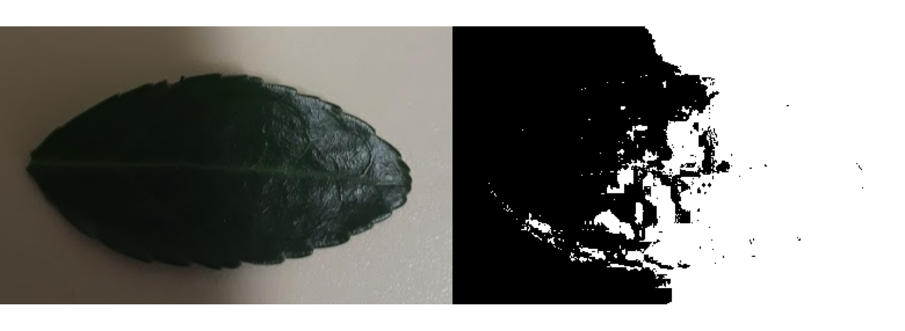
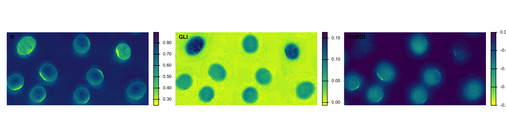
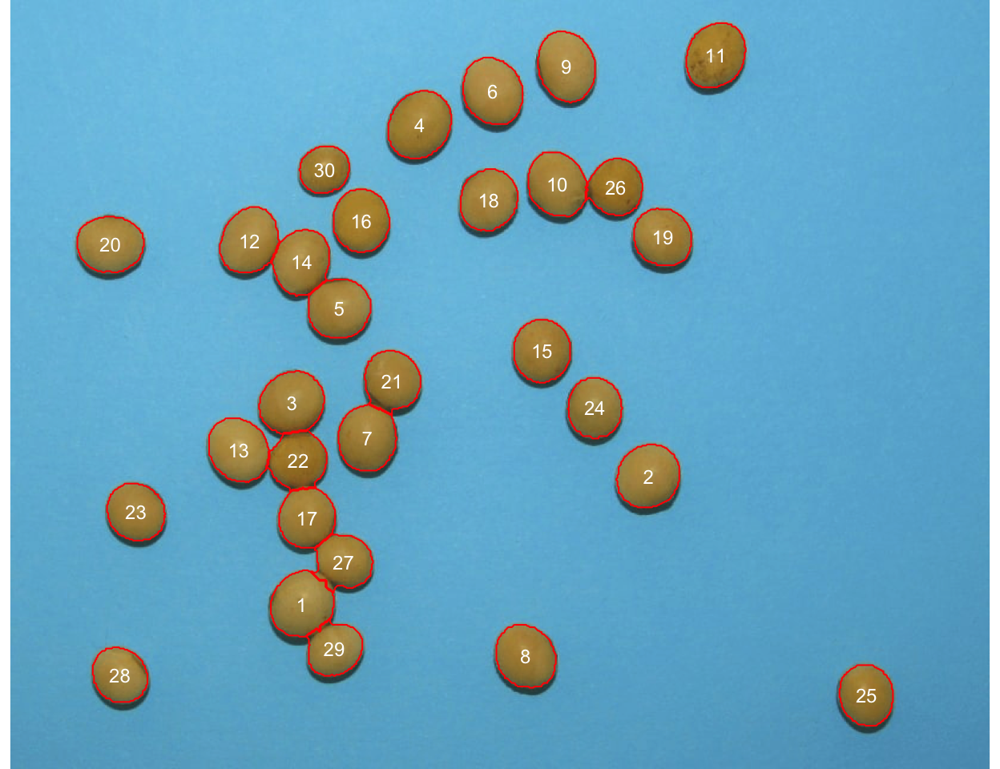
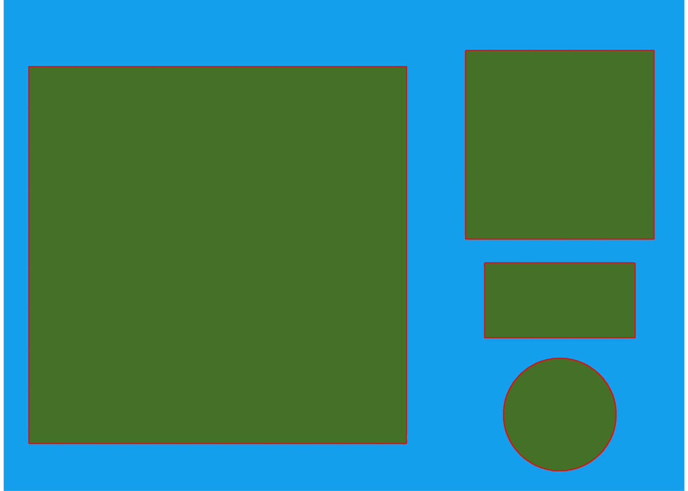
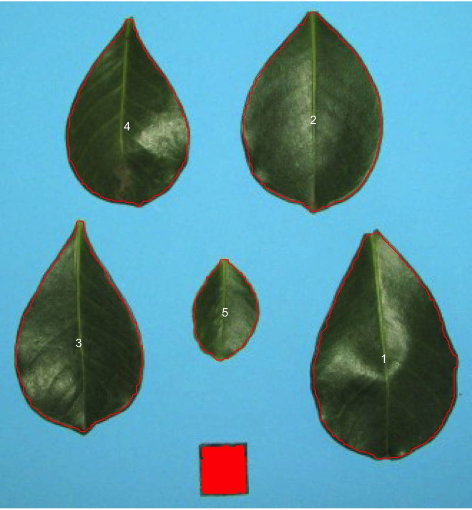
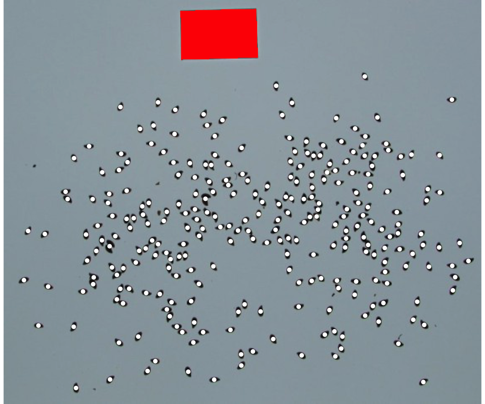
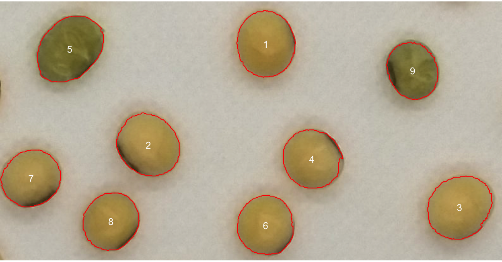
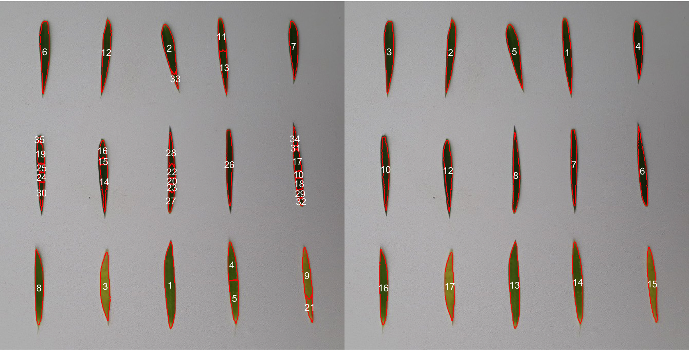
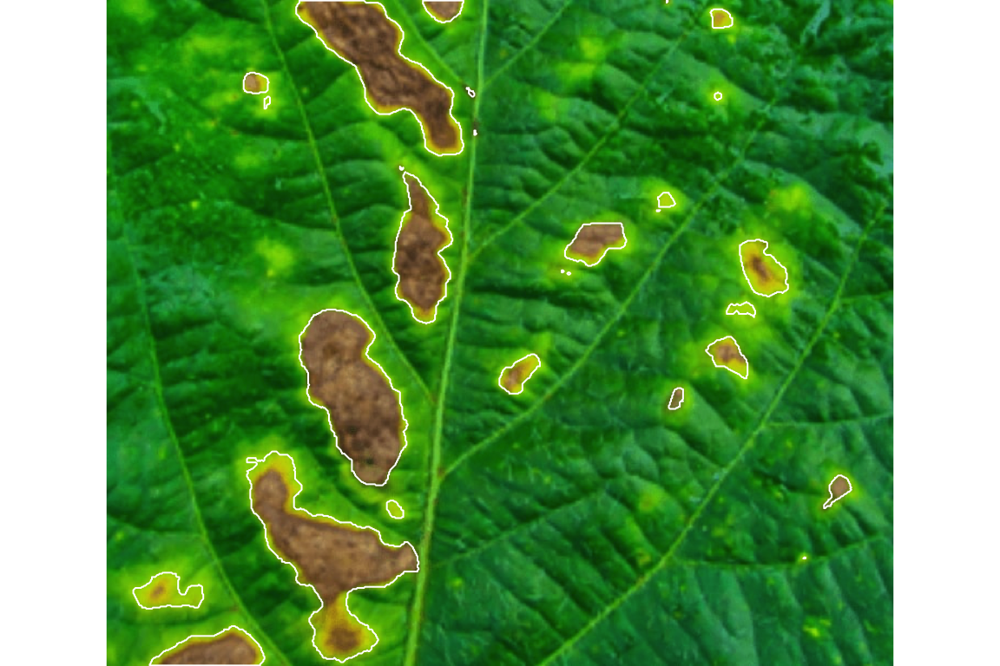

if (!requireNamespace("BiocManager", quietly = TRUE)) install.packages("BiocManager")
BiocManager::install("EBImage")10 Low-Cost High-Throughput Phenotyping: Image Analysis in R
Author: Luis Fernando Delgado Muñoz
Session: Day 4, Thursday 12 November (afternoon)
Materials of this session
Open the slides
Practical folder in R (ZIP)
Tutorial: download photos from Artemis
10.1 Learning objectives
- Explain how a photograph becomes a trait value, and where this fits in the analysis of a breeding trial
- Take images that can be analysed: background, light, scale and naming
- Count and measure seeds and leaves with
pliman, and convert pixels to centimetres - Describe colour with vegetation indices and use it to classify seeds and leaves
- Measure disease severity from a leaf image
- Process a folder of images in one call and build a table with one row per plot
- Check an image-based trait against a manual measurement before using it for selection
In the morning (Chapter 9) we saw that the quality of a trial depends on the precision of every plot value. This afternoon we look at the other end of the problem: how the plot value is measured. Counting seeds, scoring colour, measuring leaves or rating disease by eye is slow, tiring and different from person to person. A photograph and a few lines of R can do the same work for hundreds of samples, in the same way every time.
NoteInstall the image package
pliman is part of the course installation, but it also needs EBImage, a package from Bioconductor that the CRAN installer does not bring. Run this once, with internet:
If library(pliman) prints “Package EBImage is required”, this is the step that is missing.
library(pliman)
library(dplyr)All images in this chapter are the sample images installed with pliman (Olivoto 2022), so every example runs on any computer. image_pliman() reads them by name.
10.2 From a photograph to a number
An image is a table of numbers. A colour image has three tables (red, green and blue), one value per pixel. To measure something we follow the same steps every time:
- Capture the image under controlled conditions.
- Segment: separate the objects of interest (seeds, leaves, lesions) from the background.
- Measure: count the objects, compute their size, shape and colour.
- Tabulate: one row per plot, with the plot identifier.
- Analyse: the table enters the same workflow as any other trait (Chapter 9, Chapter 7).
“High-throughput phenotyping” (HTP) means doing this for many samples quickly. It does not need expensive equipment. The platforms below go from the cheapest to the most expensive; the first ones are enough to start.
| Platform | Typical use | Cost and effort |
|---|---|---|
| Smartphone with a stand and a plain tray | Seed number, size and colour; leaf area; disease on detached leaves | Very low. The same phone used for field books |
| Flatbed scanner | Seeds, grains, leaves, roots, with a known resolution (dpi) | Low. Scale is automatic |
| Fixed RGB camera on a pole or frame | Canopy cover and greenness of a plot, repeated over time | Low to medium |
| RGB camera modified for near infrared (NIR) | Vegetation indices that need NIR, such as NDVI | Medium |
| Drone with RGB or multispectral camera | Plant height, canopy cover and vigour for the whole trial | High. See the last section |
10.3 Taking images that can be analysed
The best segmentation is the one you do not need to fix later. Most of the work of a good image analysis is done before the photograph.
| Decision | What to do | What goes wrong otherwise |
|---|---|---|
| Background | One plain colour that the objects do not have: blue or white for green or yellow seeds, white for dark leaves | Objects and background cannot be separated |
| Light | Even, diffuse light, the same for all images. A box or a cloudy day, no direct sun | Shadows are read as objects, and colour changes among images |
| Scale | A reference object of known size in every image, or a fixed distance and a known dpi | Sizes are in pixels and cannot be compared among images |
| Objects | Separated, flat, not overlapping. Seeds can touch slightly | Overlapping objects are counted as one |
| Resolution | Enough pixels per object for its shape to be clear | Small objects become noise |
| File name | The plot identifier, for example plot_101.jpg |
The table cannot be joined to the trial |
| Format | The same camera and settings in all images; keep the original files | Colour differences that are not biological |
The sample image shadow.jpg shows what happens with uneven light: a dark leaf on a background that goes from light to shadow.
shadow <- image_pliman("shadow.jpg", plot = FALSE)
par(mfrow = c(1, 2), mar = c(0, 0, 0, 0))
plot(shadow)
bad <- analyze_objects(shadow, plot = TRUE, show_original = FALSE, verbose = FALSE)
No setting of the software repairs this reliably. The adaptive threshold option of analyze_objects() did not fix it with default values either: it returned 43 small fragments. The fix is a photograph with even light.
10.4 Reading an image and its colour
soy <- image_pliman("soy_green.jpg", plot = FALSE)
dim(soy) # height, width and three colour channels[1] 794 410 3A vegetation index combines the three channels in one number that highlights something. For example, the green leaf index (GLI) is high for green tissue, and the normalized green-red difference index (NGRDI) separates green from red and yellow. pliman has more than a hundred indices, listed by pliman_indexes(). image_index() draws them:
image_index(soy, index = c("R", "GLI", "NGRDI"), ncol = 3, nrow = 1)
soy_green.jpg) seen through three indices: the red channel (R), the green leaf index (GLI) and NGRDI. The two seeds that are greener than the others stand out in GLI.
The choice of index is a decision, not a default. We choose the one that separates what we want to separate, and we check it on a few images before running the whole set.
10.5 Counting and measuring seeds
analyze_objects() does the segmentation and the measurement in one call. The image soybean_touch.jpg has soybean seeds on a blue background, some of them touching.
touch <- image_pliman("soybean_touch.jpg", plot = FALSE)
seeds <- analyze_objects(touch, marker = "id", verbose = FALSE)
seeds$statistics stat value
1 n 3.000000e+01
2 min_area 1.366000e+03
3 mean_area 2.051300e+03
4 max_area 2.436000e+03
5 sd_area 2.300703e+02
6 sum_area 6.153900e+04
7 coverage 1.151122e-01
analyze_objects(), with their identifier. The default settings separate the touching seeds.
The first line, n, is the count: 30 seeds. We counted the labels of the figure one by one and the number is correct. This is the minimum check that every automatic count needs before it is trusted.
Each object has more than thirty measurements: area, perimeter, length, width, shape descriptors such as circularity and eccentricity.
seeds$results |>
select(id, area, perimeter, length, width, circularity) |>
head(5) id area perimeter length width circularity
1 1 2279 183.5097 56.57747 51.54190 14.77657
2 2 2289 178.1960 56.53366 52.36854 13.87235
3 3 2310 181.0244 57.20139 51.99249 14.18607
4 4 2436 185.6102 61.02182 51.02160 14.14250
5 5 2159 171.7107 54.01135 50.53687 13.65658All sizes are in pixels for now. To compare images we need a scale.
10.6 From pixels to centimetres
There are two ways to give the scale.
1. A known resolution (dpi). A flatbed scanner gives a fixed number of dots per inch. The sample image objects_300dpi.jpg was made at 300 dpi and contains a square of 10 x 10 cm.
objects <- image_pliman("objects_300dpi.jpg", plot = FALSE)
obj <- analyze_objects(objects, verbose = FALSE)
cm <- as.data.frame(unclass(get_measures(obj, dpi = 300)))
cm |> select(id, area, width, length) id area width length
1 1 99.81199 11.10659 11.12135
2 2 24.99414 6.50271 6.51376
3 3 7.00615 2.99284 2.99197
4 4 7.93396 1.98532 3.98985The largest object (id 1) is the square of 10 x 10 cm, and the software finds 11.11 x 11.12 cm and an area of 99.8 cm², an error of about 0.3%. This is how an image analysis is validated: measure something whose size you know.
2. A reference object in the image. With a phone there is no dpi, but we can put an object of known area in every photograph. The image la_leaves.jpg has five leaves and a square sample of 2 x 2 cm (4 cm²):
leaves <- image_pliman("la_leaves.jpg", plot = FALSE)
la <- analyze_objects(leaves, marker = "id", reference = TRUE,
reference_area = 4, reference_smaller = TRUE, verbose = FALSE)
la$results |> select(id, area, length, width) id area length width
1 1 43.429695 9.923322 6.320010
2 2 37.242871 8.706688 6.069490
3 3 32.920354 9.223013 5.533824
4 4 28.837758 8.217528 5.271185
5 5 8.900688 4.418591 2.839530
The areas are now in cm². reference_smaller = TRUE tells the function that the reference is the smallest object; with reference_larger = TRUE it is the largest, as with the black rectangle in the flax seeds image. The same photograph, in any distance or camera, gives the same area, because the reference object travels with the sample.
10.6.1 Many small seeds
The image flax_grains.jpg has hundreds of small flax seeds and a black rectangle of 6 cm² as reference.
flax <- image_pliman("flax_grains.jpg", plot = FALSE)
fx <- analyze_objects(flax, index = "GRAY", reference = TRUE, reference_area = 6,
reference_larger = TRUE, show_contour = FALSE, marker = "point",
verbose = FALSE)
c(seeds = nrow(fx$results), mean_area_cm2 = round(mean(fx$results$area), 3)) seeds mean_area_cm2
268.000 0.063 
WarningA parameter can change the count
The lower_noise argument removes small objects that are probably noise. With lower_noise = 0.3 the same image gives 211 seeds instead of 268: 57 seeds disappear from the count. The parameter is useful when there is dust or small fragments, and harmful when the seeds themselves are small. Always look at the labelled image of a few samples before running a batch.
10.7 Colour as a trait
Colour is often the trait of interest: the yellow of a root or a grain as a proxy for carotenoids, the green of a leaf for chlorophyll, the brown of a seed coat. With object_index the function returns the mean value of an index inside each object.
colour <- analyze_objects(soy, marker = "id", object_index = c("R", "G", "B", "NGRDI", "GLI"),
verbose = FALSE)
colour$object_index |> mutate(across(-id, \(x) round(x, 3))) id R G B NGRDI GLI
1 1 0.670 0.569 0.326 -0.082 0.066
2 2 0.667 0.574 0.352 -0.077 0.058
3 3 0.696 0.603 0.374 -0.071 0.060
4 4 0.672 0.580 0.362 -0.073 0.057
5 5 0.492 0.465 0.248 -0.028 0.115
6 6 0.672 0.577 0.342 -0.076 0.064
7 7 0.645 0.560 0.351 -0.072 0.058
8 8 0.647 0.551 0.319 -0.081 0.065
9 9 0.505 0.476 0.274 -0.031 0.100
soy_green.jpg. Seeds 5 and 9 are greener than the rest.
Seeds 5 and 9 have a higher GLI (0.115 and 0.100) and an NGRDI close to zero (-0.03), while the seven yellow seeds have a GLI near 0.06 and an NGRDI near -0.07. A single threshold on one of these indices classifies the seeds:
colour$object_index |>
mutate(class = if_else(NGRDI > -0.05, "green", "yellow")) |>
count(class) class n
1 green 2
2 yellow 7
ImportantThe threshold must come from data
We placed the threshold by looking at nine seeds. In a real study we would fix it on a set of seeds that were classified by an expert, and check the percentage of agreement on another set. The same applies when colour is a proxy for a trait that is expensive to measure. To use the yellow intensity of a root as a proxy for carotenoids, we first measure the carotenoids in the laboratory on a sample, build a model that predicts them from the image colour, and check the prediction on samples that were not used to build it. This is a prediction problem, and the machine learning chapter uses the same logic (Chapter 12).
10.8 Shape and leaf colour: the flax leaves
Elongated objects need one change in the settings. The image flax_leaves.jpg has 15 flax leaves, two of them yellow.
fleaves <- image_pliman("flax_leaves.jpg", plot = FALSE)
par(mfrow = c(1, 2), mar = c(0, 0, 0, 0))
split_default <- analyze_objects(fleaves, marker = "id", verbose = FALSE)
whole <- analyze_objects(fleaves, marker = "id", watershed = FALSE,
object_index = c("NGRDI", "GLI"), verbose = FALSE)
c(default = nrow(split_default$results), without_watershed = nrow(whole$results)) default without_watershed
35 15 
watershed = FALSE, 15 objects.
The default separates touching round objects (like the soybean seeds) using a watershed algorithm, and for long, thin objects it cuts them into pieces. With watershed = FALSE we get one object per leaf, and now we can measure and classify:
whole$results |>
select(id, area, length, width) |>
left_join(whole$object_index, by = "id") |>
mutate(yellow = NGRDI < 0) |>
filter(yellow) id area length width NGRDI GLI yellow
1 15 1779 146.8624 16.14967 -0.04648931 0.1809757 TRUE
2 17 1839 134.0336 18.95190 -0.03120197 0.1769517 TRUETwo of the 15 leaves have an NGRDI below zero: the two yellow leaves. In a breeding trial the same logic gives a senescence score or a stay-green measure without a colour chart.
10.9 Disease severity
Severity is the percentage of leaf area with symptoms. measure_disease() needs three small images that act as colour palettes: healthy tissue, symptoms and background (here the leaf has no background).
set.seed(10) # the palettes are sampled at random: this makes the result repeatable
leaf <- image_pliman("sev_leaf_nb.jpg", plot = FALSE)
healthy <- image_pliman("sev_healthy.jpg", plot = FALSE)
lesions <- image_pliman("sev_sympt.jpg", plot = FALSE)
sev <- measure_disease(img = leaf, img_healthy = healthy, img_symptoms = lesions,
lesion_size = "large", plot = TRUE)
sev$severity healthy symptomatic
1 89.29372 10.70628
The leaf has 10.7% of symptomatic area. The palettes define what “healthy” and “symptom” mean, so the same palettes must be used for all images of a study. The software samples pixels of the palettes at random, so the percentage changes slightly from run to run unless we fix the seed, as above. In mutation breeding this is useful to screen large M2 populations for the response to a disease without rating each leaf by eye.
10.10 Many images at once
A folder of images is processed with the same call. The function looks for files whose name contains a pattern in the folder dir_original, and returns the results of all the images in one table. Here we put three sample images in a folder, named as if they were three plots:
dir <- file.path(tempdir(), "plots")
dir.create(dir, showWarnings = FALSE)
src <- system.file("tmp_images", package = "pliman")
file.copy(file.path(src, c("soybean_touch.jpg", "soy_green.jpg", "flax_grains.jpg")),
file.path(dir, c("plot_101.jpg", "plot_102.jpg", "plot_103.jpg")))[1] TRUE TRUE TRUEbatch <- analyze_objects(pattern = "plot_", dir_original = dir, plot = FALSE, verbose = FALSE)
batch$statistics# A tibble: 3 × 7
img n area_mean area_min area_max area_sum area_sd
<chr> <int> <dbl> <dbl> <dbl> <dbl> <dbl>
1 plot_101 30 2051. 1366 2436 61539 230.
2 plot_102 9 7079. 5707 8370 63713 865.
3 plot_103 156 44.5 5 4679 6937 374.(The three images are not three plots of a trial: they only show the structure of the output. The name of each file is in the column img.)
The result has one row per image, which is one row per plot when the file name is the plot identifier. The last step is to join it to the field book:
# 'trial' is the field book: one row per plot, with the column "plot"
image_traits <- batch$statistics |>
mutate(plot = as.integer(sub("plot_", "", img))) |>
select(plot, seed_number = n, seed_area = area_mean)
trial <- trial |> left_join(image_traits, by = "plot")From here the image traits are traits like any other. They go to the single-trial analysis of Chapter 9 (mixed model with the design and, if justified, the spatial correction), and their heritability tells us if they are precise enough to select on.
10.11 Is the image trait good enough?
A trait from an image is useful only if it is precise and valid.
- Valid: it measures what we want. Compare it with the manual or laboratory measurement on a subset of plots (20 to 50 is a start): correlation, and a plot of one against the other. If the correlation is low, the image trait cannot replace the manual one.
- Precise: its heritability in the trial is high enough. An image trait can be perfectly valid and still not heritable (for example, the colour of a very variable environment).
- Reproducible: two photographs of the same sample give the same value. Repeat 10 samples and compare.
# 'check' has one row per plot: the image value and the manual value
cor(check$seed_number_image, check$seed_number_manual)
plot(check$seed_number_manual, check$seed_number_image); abline(0, 1)The line abline(0, 1) shows where the values would fall if the two methods agreed exactly. Systematic distance from that line is a bias that can be corrected; scatter around it is error that cannot.
10.12 Near infrared and drones, briefly
Near infrared (NIR). Healthy leaves reflect much more NIR than visible red, and stressed leaves less. An RGB camera with the infrared filter removed, or a multispectral camera, records this. With the NIR band, indices such as NDVI (normalized difference vegetation index) measure vigour and stress better than RGB indices. In pliman the functions that read a band declare it with the arguments re (red edge) and nir.
Drones. A drone takes hundreds of images that are joined in an orthomosaic. The field is then divided in plots by a shapefile, and the indices are extracted per plot. The result is again one row per plot with plant height, canopy cover or vigour. It gives the whole trial in a few minutes, but it needs a flight plan, ground control points and processing software, and the plots need to be well marked. pliman has a family of functions for orthomosaics (mosaic_*) that work with the same logic. For a programme that is starting, we suggest to learn the steps of this chapter with photographs on a tray first: the segmentation, the scale, the validation and the join with the trial are the same.
10.13 Pitfalls
| Pitfall | Consequence | What to do |
|---|---|---|
| Uneven light or shadows | Wrong mask, wrong size and colour | Diffuse light, a box or a cloudy day; same set-up in all images |
| One set of parameters for all images | Counts and sizes change between images | Test the parameters on 5 to 10 images, and then keep them |
| No scale | Sizes in pixels, not comparable | Reference object or known dpi |
| Not looking at the labelled image | Wrong counts go unnoticed | Save and inspect the labelled image of a sample |
| Colour threshold from 9 seeds | Poor classification in a new set | Fix thresholds on a training set and check on another |
| Image trait without validation | We select on a number that does not measure the trait | Compare with manual measurements on a subset |
| Different cameras or settings between trials | Differences that are not biological | Same camera and settings; keep the originals |
| Overlapping objects | Several objects counted as one | Separate the objects; use watershed for round ones |
10.14 Exercise
Use the image flax_leaves.jpg.
- Count the leaves with the default settings and with
watershed = FALSE. Which one is correct? - Using
watershed = FALSE, obtain the length and the width of each leaf, in pixels. - The leaves have three rows of five. Identify the leaves with the lowest NGRDI. How many are there, and in which row do they appear?
- Process the image
flax_grains.jpgas in the chapter, and compute the total area of the seeds in cm². Why does the result change if you uselower_noise = 0.3?
TipSolution
# 1. default and without watershed
c(default = nrow(split_default$results), without_watershed = nrow(whole$results)) default without_watershed
35 15 # there are 15 leaves, so watershed = FALSE is correct
# 2. length and width in pixels
whole$results |> select(id, length, width) |> head() id length width
1 1 147.6561 15.21670
2 2 141.5090 16.26211
3 3 141.0806 18.96657
4 4 113.1921 17.43738
5 5 127.6750 21.60350
6 6 156.9104 15.09458# 3. leaves with the lowest NGRDI (x and y are the position of the centre)
whole$results |> select(id, x, y) |>
left_join(whole$object_index, by = "id") |>
arrange(NGRDI) |> head(3) id x y NGRDI GLI
1 15 598.0716 550.7603 -0.04648931 0.1809757
2 17 204.4565 555.6280 -0.03120197 0.1769517
3 14 453.4047 547.9372 0.08286309 0.3084939# 4. total area of the flax seeds in cm2
sum(fx$results$area)[1] 16.75108sum(fx_noise$results$area)[1] 13.6795- There are 15 leaves: the correct count is the one without watershed (the default gives 28 pieces).
- The table gives the length and the width of each leaf.
- Two leaves have an NGRDI below zero: the two yellow ones. Their
yvalues (about 550 in an image of 680 pixels high, whereygrows from the top to the bottom) show that both are in the bottom row. - The total area is 16.8 cm² with the default and 13.7 cm² with
lower_noise = 0.3: the filter removes 57 seeds, so the total is lower.
10.15 Key takeaways
- An image is a table of numbers. Segment, measure, tabulate and analyse: the table enters the same workflow as any other trait.
- A good photograph (plain background, even light, a reference object, the plot as file name) is worth more than any software option.
plimancounts, measures size and shape, describes colour with indices, and measures severity, for one image or a folder.- Validate with something of known size, and check the labelled image before trusting a batch.
- Fix colour thresholds on a training set. A colour proxy needs a laboratory calibration.
- An image trait is useful only if it is valid (agrees with the manual measure) and precise (heritable).
- Start with a phone and a tray; drones and NIR come after the basic steps work.
10.16 References
- Olivoto T (2022). Lights, camera, pliman! An R package for plant image analysis. Methods in Ecology and Evolution 13: 789 to 798.
- Olivoto T, Andrade SMP, Del Ponte EM (2022). Measuring plant disease severity in R: introducing and evaluating the pliman package. Tropical Plant Pathology 47: 95 to 104.
- Gupta S, Rosenthal DM, Stinchcombe JR, Baucom RS (2020). The remarkable morphological diversity of leaf shape in sweet potato (Ipomoea batatas): the influence of genetics, environment, and G x E. New Phytologist 225: 2183 to 2195.
- Package website:
https://olivoto.github.io/pliman/